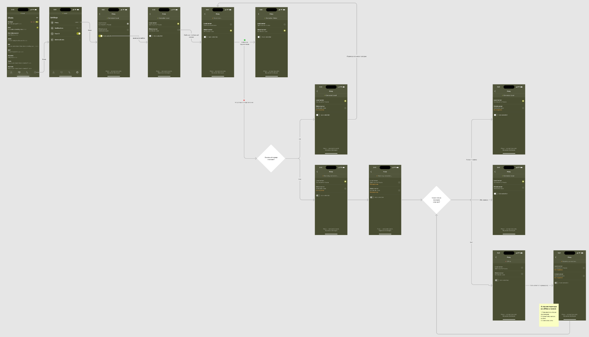
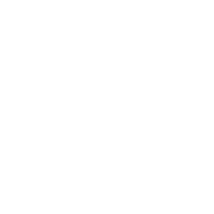

Выявил 5 сценариев потенциального раскрытия пользовательских данных и спроектировал механики их предотвращения
Мой вклад
Discovery, UX/UI Design, Usability Testing, Branding
2026
Презентация кейса на 2 мин.
Мой вклад
Discovery, UX/UI Design, Usability Testing, Branding
2026
Презентация кейса на 2 мин.
Проблема
Заказчик использовал его для общения с бизнес-партнёрами и ближайшим кругом сотрудников. На встрече с командой выяснил, что риск раскрытия информации собеседниками мешал владельцу мессенджера полноценно вести рабочие коммуникации.
Задача
Проблема
Требовалось обеспечить контроль над приватностью переписки и звонков.
Задача
Это слова нашего клиента — частного бизнесмена. Вся коммуникация по проекту шла через его менеджера и личного ассистента.
По сути, формат был ближе к digital concierge: решения принимались не для «среднего пользователя», а под его сценарии, требования и привычки.
Сначала я проверил, можно ли вообще не проектировать отдельный продукт. Сравнил privacy-first мессенджеры по требованиям, которые мы уже зафиксировали: сервис не должен знать, кто пользователь, и не должен получать доступ к содержимому переписки.
Ближе всего оказался Briar: он не требует привычного профиля, данные хранятся локально, а передача построена вокруг защищённых соединений. По уровню приватности это был реальный вариант, поэтому мы принесли его клиенту как альтернативу собственной разработке.
Клиент отказался: ему нужен был закрытый продукт, которым можно управлять самостоятельно, и собственный визуальный язык. Поэтому готовое приложение осталось референсом, а не решением.
Discovery
Разобрал, как устроены передача, отображение и хранение информации, а также действия участников общения.
| Зона риска | Раздел | Где раскрываются данные |
|---|---|---|
| Коммуникация | Добавление контакта | Раскрытие имени и номера телефона при обмене контактными данными. |
| Чаты | Распространение сообщений и документов через пересылку, скриншоты и сохранение файлов. | |
| Звонок | Раскрытие содержания разговора при включении громкой связи или записи звонка собеседником. | |
| Подключение | Прокси | Передача сетевых данных вне защищённого маршрута. |
| Отображение данных | Системные уведомления | Отображение имени собеседника и текста сообщения на заблокированном экране. |
Для приоритизации использовал три критерия: критичность возможной утечки, значимость сценария для заказчика и техническую реализуемость защиты.
| Приоритет | Точка риска | Почему такой приоритет | Реализуемость |
|---|---|---|---|
| 01 | Прокси | При сбое прокси данные могут передаваться вне защищённого маршрута. | Средняя — требуется сеть резервных прокси с автоматическим переключением. |
| 02 | Звонок | Основной способ коммуникации с партнёрами. | Частичная — невозможно исключить запись разговора на другом устройстве. |
| 03 | Чаты | Через переписку передаются конфиденциальные сообщения и файлы. | Частичная — невозможно полностью предотвратить копирование данных вне приложения. |
| 04 | Добавление контакта | Новые контакты добавляются раз в 1–2 месяца. | Высокая — можно устанавливать связь без передачи имени и телефона. |
| 05 | Уведомления | Данные могут отображаться на заблокированном экране. | Высокая — можно скрыть содержание уведомлений. |
Соединение
Выяснил, что прокси уже используется, но никак не представлен в интерфейсе. Здесь даже не понадобилось строить CJM: искать проблемы в существующем сценарии было бессмысленно — самого сценария взаимодействия с прокси просто не было.
| Проблема | К чему приводит |
|---|---|
| Не отображается статус подключения | Пользователь не понимает, активно ли защищённое соединение и не прервалось ли оно. |
| Не отображаются данные сервера | Невозможно узнать, к какому прокси подключено приложение и в какой стране он находится. |
| Нет управления подключением | Пользователь не может самостоятельно сменить сервер при сбое или ухудшении связи. |
Чтобы пользователь понимал состояние соединения и мог реагировать на сбои, предусмотрел четыре статуса.
| Статус | Что видит и понимает пользователь |
|---|---|
| Подключение | Приложение устанавливает защищённое соединение. |
| Подключено | Защищённое соединение установлено и активно. |
| Переподключение | Текущий сервер недоступен, приложение переключается на резервный. |
| Нет подключения | Защищённое соединение отсутствует, передача данных приостановлена. |
Одних статусов было недостаточно: нужно было обеспечить автоматическое восстановление подключения и исключить передачу данных в обход прокси.
Для этого разработал схему переходов между серверами и предусмотрел fallback-сценарии.
| Сценарий | Поведение приложения |
|---|---|
| Прокси работает | Соединение активно, коммуникации доступны. |
| Прокси отключился | Передача приостанавливается, запускается поиск резервного сервера. |
| Резервный прокси найден | Приложение автоматически восстанавливает подключение. |
| Все прокси недоступны | Сообщения, звонки и передача файлов блокируются; локальные данные остаются доступны. |
| Ручной выбор сервера | При сбое приложение предлагает сменить сервер или включить автовыбор. |
Приоритет отдал конфиденциальности: если восстановить защищённое соединение невозможно, приложение прекращает сетевую передачу, но остаётся доступным для просмотра локальных данных.

Нужно было найти баланс между автоматической защитой и возможностью пользователя контролировать соединение.
| Подход | Преимущество | Недостаток |
|---|---|---|
| Только статусы | Простое взаимодействие. | Нет управления подключением. |
| Ручной выбор сервера | Полный контроль выбора. | Требует постоянного участия пользователя. |
| Автоматическое подключение + ручной выбор | Не отвлекает от общения, сохраняет возможность управления. | Более сложная логика состояний. |
Выбрал автоматическое подключение с возможностью ручного выбора сервера. Приложение самостоятельно восстанавливает соединение, пользователь видит его состояние и при необходимости может вмешаться.
Если все защищённые маршруты недоступны, сетевая передача останавливается.
Сформулировал пять UX-гипотез о понятности интерфейса и управлении защищённым соединением. Провёл сценарное Usability Testing с тремя представителями команды заказчика.
| Этап | Гипотеза |
|---|---|
| Управление подключением | Пользователь самостоятельно понимает статусы соединения, автоматическое переключение серверов и возможность ручного выбора. |
| Назначение прокси | Краткого описания может быть недостаточно, чтобы пользователь понял, что такое прокси и зачем он нужен. |
| Выбор Local server | Формулировка «Optimized for Russia» может быть неоднозначной: пользователь не понимает, где расположен сервер и в чём заключается оптимизация для России. |
| Выбор Global server | Пользователю может потребоваться информация о стране расположения сервера для осознанного выбора подключения. |
| Полная потеря соединения | Пользователь может не понимать, почему приложение перестало работать и какие действия доступны для восстановления подключения. |
Результат: участники успешно справились с основными сценариями управления подключением. Критичных проблем с пониманием статусов не выявили. Остальные гипотезы оставили для дальнейшей проверки.
Звонки
На брифинге выяснил, что заказчик чаще общается с бизнес-партнёрами голосом. Во время разговора ему было важно видеть, какие инструменты активны на стороне собеседника, чтобы понимать, не изменились ли условия конфиденциальности звонка.
Разобрал, какие действия собеседника могут менять условия разговора незаметно для 2-го участника.
| Действие собеседника | Потенциальный риск |
|---|---|
| Включает громкую связь | Разговор могут слышать посторонние. |
| Выключает микрофон | 2-й участник перестаёт слышать, что происходит на стороне собеседника. |
| Подключает Bluetooth | Звук может выводиться на внешнее устройство. |
Команда разработки подтвердила, что приложение может отслеживать изменения состояния микрофона, громкой связи и подключённого аудиоустройства, а также передавать эту информацию другому участнику звонка.
Оставалось определить, как отображать эти состояния в интерфейсе.
Выяснил, что встроить собственные индикаторы в системный экран звонка нельзя. Поэтому потребовалось найти альтернативный способ отображения состояний собеседника внутри самого мессенджера.
После того как выяснил, что системный экран звонка нельзя кастомизировать, определил 2 возможных подхода: показывать состояние звонка только в соответствующем разделе или сделать его постоянно доступным при работе с приложением.
| Подход | Преимущество | Недостаток |
|---|---|---|
| Только в разделе звонков | Не перегружает остальные экраны. | Для проверки состояния нужно возвращаться в раздел звонков. |
| Постоянный виджет | Состояние звонка остаётся в поле зрения при работе с приложением. | Занимает место и требует адаптации под разные экраны. |
Выбрал постоянный виджет внутри приложения, чтобы пользователь мог продолжать переписку или работать с другими разделами, не теряя контроль над текущим разговором.
Опираясь на потребность заказчика, определил состав виджета: он должен показывать не только факт активного звонка, но и информацию об условиях разговора на стороне собеседника.
| Элемент | Зачем нужен |
|---|---|
| Активный звонок | Показывает, что разговор продолжается. |
| Индикаторы собеседника | Отображают доступные для отслеживания состояния микрофона, громкой связи и аудиоустройства. |
| Компактный формат | Позволяет контролировать звонок без перехода на отдельный экран. |
Виджет разместил в интерфейсе приложения, чтобы состояние разговора оставалось доступным при переключении между основными разделами.
При проверке User Flow обнаружил, что на некоторых экранах меняется структура навигации и виджет исчезает. Например, при переходе из основного раздела внутрь чата.
При этом разговор продолжается, а собеседник по-прежнему может включить громкую связь, выключить микрофон или сменить аудиоустройство.
| Проблема | Решение |
|---|---|
| Виджет не отображается в чате | Добавил краткие сообщения об изменениях поверх текущего экрана. |
| Пользователь может не заметить изменение условий разговора | Предусмотрел появление сообщения при смене отслеживаемого состояния собеседника. |
Разделил информирование на 2 уровня: виджет показывает текущее состояние звонка, а краткие сообщения информируют об изменениях на экранах, где виджет недоступен.
Поскольку решение было нестандартным и не имело прямых аналогов в привычных сценариях звонков, провёл точечное тестирование с 4 сотрудниками заказчика.
Полный сценарий звонка было сложно воспроизвести в прототипе из-за перехода между системным интерфейсом iOS и мессенджером. Поэтому показал участникам экран уже активного звонка без предварительных объяснений и попросил описать, что происходит.
| Что проверял | На что обращал внимание |
|---|---|
| Активный звонок | Понимает ли участник, что разговор продолжается. |
| Назначение виджета | Понимает ли, какую информацию он отображает. |
| Связь с приложением | Понимает ли, что звонок остаётся активным при работе внутри мессенджера. |
Участники правильно считывали основную концепцию: понимали, что звонок продолжается, а виджет показывает его состояние внутри приложения. Поэтому принцип решения оставил без изменений.
Чаты
Помимо звонков, заказчик использовал мессенджер для обмена конфиденциальными сообщениями и документами. Ему было важно понимать, если собеседник сохраняет или распространяет содержимое переписки.
Разобрал действия собеседника, из-за которых конфиденциальная информация может оказаться за пределами диалога.
| Действие собеседника | Потенциальный риск |
|---|---|
| Делает скриншот | Сохраняет содержимое переписки в виде изображения, которое может передать посторонним. |
| Пересылает сообщение | Передаёт конфиденциальную информацию другому получателю без ведома отправителя. |
Рассмотрел 2 варианта: ограничивать возможность сохранения и распространения информации или фиксировать эти действия и сообщать о них отправителю.
| Подход | Преимущество | Недостаток |
|---|---|---|
| Ограничивать действия | Снижает возможность распространения информации через функции приложения. | Не исключает копирования данных другими способами, например съёмкой экрана с другого устройства. |
| Фиксировать и информировать | Позволяет отправителю узнавать, что собеседник сделал скриншот или переслал сообщение. | Не предотвращает само распространение информации. |
Выбрал 2-й подход: не запрещать скриншоты и пересылку сообщений, а фиксировать эти события в интерфейсе. Так пользователь сохраняет привычные сценарии общения, но получает больше информации о действиях собеседника.
Нужно было решить, где пользователь должен узнавать о скриншоте или пересылке. Если показывать событие только внутри переписки, отправитель может долго не замечать его, пока не откроет нужный диалог.
Поэтому предусмотрел 2 уровня информирования.
| Уровень | Зачем нужен |
|---|---|
| Внутри чата | Системное сообщение фиксирует действие собеседника в контексте переписки. |
| В списке чатов | Индикатор помогает заметить событие ещё до открытия диалога. |
Разделил информирование на 2 уровня: внутри переписки пользователь видит само событие, а в списке чатов — сигнал о том, что в диалоге произошло действие, требующее внимания.
На основе выбранного подхода предусмотрел системные сообщения внутри чата и индикаторы на уровне списка переписок.
Системные сообщения должны отличаться от обычных реплик и показывать факт действия, не прерывая разговор. Индикаторы в списке чатов позволяют обратить внимание на событие без необходимости постоянно проверять каждый диалог.
Контакты
На брифинге выяснил, что заказчик добавляет новых собеседников примерно раз в 1–2 месяца. При этом он хотел устанавливать контакт исключительно при личной встрече, без обмена номером телефона, почтой или другими персональными данными.
У заказчика уже была идея использовать QR-код. Предстояло проверить, насколько этот способ соответствует требованиям приватности.
| Требование | Почему важно |
|---|---|
| Личная встреча | Заказчик хотел устанавливать связь только с людьми, с которыми встретился лично. |
| Без персональных данных | Подключение не должно требовать имени, номера телефона или почты. |
| Защита от повторного использования | Сохранённый код не должен оставаться постоянным способом подключения. |
Чтобы оценить предложение заказчика, рассмотрел альтернативные способы обмена данными между устройствами, находящимися рядом.
| Способ | Преимущество | Ограничение |
|---|---|---|
| QR-код | Понятное визуальное взаимодействие, не требует дополнительных устройств. | Статичный код можно сохранить и передать другому человеку. |
| NFC | Позволяет инициировать взаимодействие при сближении устройств. | Возможности прямого обмена между телефонами ограничены платформой. |
| Bluetooth | Позволяет обнаруживать устройства поблизости без камеры. | Требует выбора нужного устройства и подтверждения подключения. |
QR-код оказался наиболее подходящим для выбранного сценария. Однако обычный статичный QR не отвечал требованию защиты от повторного использования.
Чтобы код не превращался в постоянный идентификатор пользователя, предусмотрел его обновление и ограниченный срок действия.
Дополнительно заложил взаимное сканирование: для завершения подключения каждый участник должен выполнить действие со своей стороны.
Это позволяет не ограничиваться односторонним сканированием и предусматривает подтверждение подключения обоими участниками.
Разработал пользовательский путь для 2 участников: от запуска подключения до появления нового контакта.
После взаимного сканирования каждый пользователь самостоятельно задаёт локальное имя собеседнику. Для этого не требуется передавать персональные данные.

Разделил прерывания по ключевому моменту: успели ли пользователи установить взаимную связь через QR-коды.
| Когда пользователь выходит | Поведение приложения |
|---|---|
| До установления связи | Обмен QR-кодами не завершён, поэтому контакт не создаётся. Подключение можно начать заново. |
| После установления связи, но до ввода имени | Контакт уже сохранён у обоих пользователей под системным названием «Без имени». Его можно переименовать позже, без дополнительного поп-апа. |
Создание контакта зависит от подтверждённого взаимного подключения, а не от ввода имени. Даже если пользователь выйдет на последнем шаге, установленная связь сохранится.
Провёл тестирование сценария взаимного подключения, чтобы проверить, могут ли пользователи самостоятельно добавить друг друга без предварительных объяснений.
Участники в целом справлялись с прохождением сценария, но обнаружилась проблема на его начальном этапе.
| Что проверял | Наблюдение |
|---|---|
| Начало подключения | Пользователи не всегда понимали, кто должен сканировать QR первым. |
| Взаимное сканирование | После начала процесса участники в целом справлялись с последовательностью действий. |
| Завершение подключения | Участники могли пройти сценарий до добавления контакта. |
Тестирование подтвердило, что сценарий взаимного подключения в целом понятен, но выявило неопределённость в распределении ролей на старте.
Проблему пока оставили открытой: интерфейс недостаточно явно объяснял, кто должен первым начать сканирование.
Уведомления
Даже если переписка защищена внутри мессенджера, системные уведомления могут раскрывать конфиденциальную информацию на заблокированном экране устройства.
Поэтому нужно было дать заказчику возможность самостоятельно управлять тем, какие данные отображаются в уведомлениях.
Разобрал, какая именно информация может стать доступна постороннему человеку без открытия приложения.
| Что отображается | Потенциальный риск |
|---|---|
| Имя собеседника | Посторонний может узнать, с кем общается пользователь. |
| Содержание сообщения | Посторонний может прочитать часть конфиденциальной переписки. |
Изучил возможности системных уведомлений iOS и предусмотрел отдельное управление отображением имени собеседника и текста сообщения.
Это позволило не ограничивать пользователя единственным режимом приватности, а дать ему возможность самостоятельно выбирать, какую информацию скрывать.
| Настройка | Что отображается |
|---|---|
| Имя и текст открыты | Имя собеседника и содержание сообщения. |
| Имя скрыто | Только содержание сообщения. |
| Текст скрыт | Имя собеседника без содержания сообщения. |
| Имя и текст скрыты | Нейтральное уведомление без данных о собеседнике и переписке. |
Дополнительно предусмотрел возможность полностью отключить уведомления.
В MVP управление приватностью уведомлений предусмотрел сразу для всех переписок.
Так пользователь мог задать единые правила, не настраивая каждый диалог отдельно.
Возможность индивидуально управлять уведомлениями для конкретных собеседников оставили для дальнейшего развития продукта.
При проектировании обнаружил проблему: по одним только переключателям пользователь не всегда может представить, как будет выглядеть уведомление после скрытия имени или содержания сообщения.
Поэтому рассмотрел 2 варианта отображения настроек.
| Подход | Преимущество | Недостаток |
|---|---|---|
| Только переключатели | Простой и компактный интерфейс. | Пользователь не видит результат и должен самостоятельно представлять, как изменится уведомление. |
| Переключатели с Live Preview | Пользователь сразу видит итоговый вид уведомления. | Требует дополнительного места на экране и синхронизации предпросмотра с настройками. |
Выбрал Live Preview: разместил рядом с настройками пример системного уведомления, который изменяется при переключении параметров.
Добавил плавную анимацию изменения состояния, чтобы пользователь замечал, какой именно элемент уведомления был скрыт или появился.
Так можно сразу увидеть разницу между уведомлением без имени собеседника, без текста сообщения и без обоих элементов.
Брендинг
До работы с цветом, типографикой и графикой зафиксировали четыре границы для визуального языка.
| Что задал клиент | Что это значит для дизайна |
|---|---|
| Military | Взять собранность и тактический характер направления, не превращая интерфейс в буквальную военную стилизацию. |
| Не второй Telegram | Не повторять визуальный язык привычных мессенджеров — продукту нужен собственный характер. |
| Партнёры в других странах | В дальнейшем продукт станет мультиязычным — типографика должна поддерживать разные языки и письменности. |
| iOS и Android | Типографика и визуальная система должны одинаково уверенно работать на обеих платформах. |
Military должно считываться через тон и детали, а продукт — иметь собственный характер.
Разложил заданное направление на визуальные принципы.
| Признак | Что можно взять в продукт |
|---|---|
| Тёмная палитра | Графит, хаки, оливковый, песочный, приглушённые акценты |
| Тактическая графика | Сетки, координаты, схемы, маркеры, технические линии |
| Собранная композиция | Больше структуры и контроля |
| Жёсткая иконка | Простые формы, углы, контур, без мягкой дружелюбности |
Military стало не декором, а направлением для визуального кода — тёмного, точного и собранного.
Хотел добавить в интерфейс анимацию, чтобы визуальный язык ощущался современнее и технологичнее.
| Ограничение | Что это значит для графики |
|---|---|
| Мобильное приложение | Графика должна мало весить |
| Анимация | Должна хорошо работать в движении и собираться средствами кода |
| Military-направление | Нужен технический, системный характер |
Одним из подходящих направлений стала символьная графика — знакомая по визуальному языку «Матрицы» и Ghost in the Shell. Она понравилась клиенту.
Откройте сайт на компьютере — так макеты сохранят все детали.